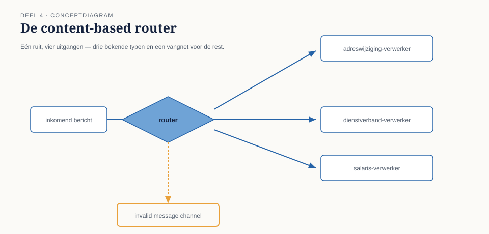
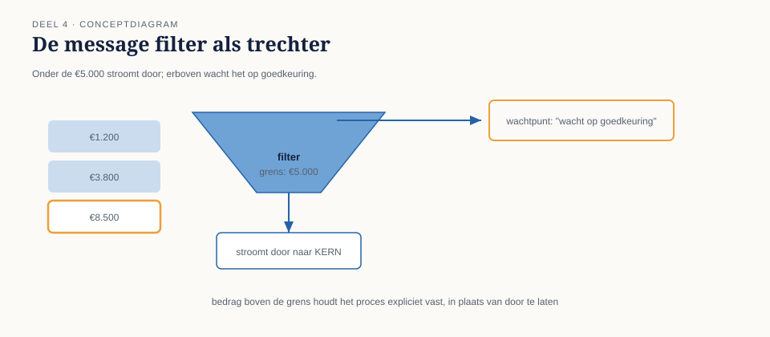

Cursus Enterprise Integration Patterns · Niveau 1 (Fundament) · Deel 4 van 30
Basisrouting: content-based router en message filter
Het ontwerp uit deel 3 werkte voor de adreswijziging waarmee Caspar was begonnen. Twee weken later kwam de eerste uitbreiding: naast adreswijzigingen moest het mutatiekanaal ook dienstverbandmutaties en salariscorrecties dragen. Alle drie zijn command messages, allemaal bestemd voor KERN — dus volgens de regel uit deel 2 ("een kanaal draagt precies één soort bericht") leek dit in eerste instantie geen probleem: het zijn immers allemaal "mutaties".
7secties
3figuren
12controlevragen
1kernzinnen
Niveau 1: ① Van synchroon naar asynchroon: waarom messaging → ② Messagingfundamenten: kanaal, bericht, endpoint → ③ Message Construction: command, event, document en request-reply → ④ Basisrouting: content-based router en message filter (hier) → ⑤ Basistransformatie: translator, envelope wrapper, normalizer → ⑥ Point-to-point vs. publish-subscribe kanalen, verdiept → ⑦ Betrouwbaarheid I: garanties en idempotentie → ⑧ Betrouwbaarheid II: volgorde en guaranteed delivery → ⑨ Foutafhandeling basis: dead letter channel en invalid message channel → ⑩ Examentraining en capstone: de verdediging
4.0 Eén kanaal, drie soorten mutaties, één probleem
Sectie 1 van 7
Het ontwerp uit deel 3 werkte voor de adreswijziging waarmee Caspar was begonnen. Twee weken later kwam de eerste uitbreiding: naast adreswijzigingen moest het mutatiekanaal ook dienstverbandmutaties en salariscorrecties dragen. Alle drie zijn command messages, allemaal bestemd voor KERN — dus volgens de regel uit deel 2 ("een kanaal draagt precies één soort bericht") leek dit in eerste instantie geen probleem: het zijn immers allemaal "mutaties".
De eerste productie-week na de uitbreiding bewees het tegendeel. Salariscorrecties moesten, in tegenstelling tot de andere twee, eerst langs een extra validatiestap bij de financiële administratie voordat KERN ze mocht verwerken — een wettelijke eis die niet gold voor adreswijzigingen of dienstverbandmutaties. KERN begon salariscorrecties zonder die validatie te verwerken, wat drie keer tot een foutieve uitbetaling leidde voordat het werd opgemerkt.
Het onderliggende probleem: "mutatie" bleek geen fijnmazig genoeg categorie te zijn. Binnen wat op het eerste gezicht één berichtsoort leek, school een verschil dat om een andere behandeling vroeg. Dit deel behandelt de twee eenvoudigste patronen om daarmee om te gaan: de content-based router, die een bericht op basis van zijn inhoud naar het juiste vervolgpad stuurt, en de message filter, die bepaalt welke berichten een kanaal überhaupt mogen bereiken.
Figuur 4-1 — één inkomend mutatiekanaal met drie berichttypen (adreswijziging, dienstverbandmutatie, salariscorrectie) die zonder onderscheid naar KERN stromen, met een rode markering bij de plek waar de salariscorrectie de ontbrekende validatiestap mist
02
4.1 Twee manieren om een verschil te maken tussen berichten
Sectie 2 van 7
Er zijn, ruwweg, twee manieren om ervoor te zorgen dat verschillende soorten berichten een verschillend vervolgpad krijgen, en het is belangrijk ze niet door elkaar te gebruiken:
Aparte kanalen per soort. De striktste oplossing: in plaats van één mutatiekanaal, drie kanalen (adreswijzigingen, dienstverbandmutaties, salariscorrecties), elk met een eigen contract en eigen ontvangers. Dit is meestal de voorkeursoplossing wanneer het onderscheid structureel is en blijvend — zoals hier het geval is, want de wettelijke validatie-eis voor salariscorrecties verdwijnt niet.
Eén kanaal met een router ervoor. Als het onderscheid te fijnmazig is om voor elke variant een apart kanaal te rechtvaardigen, of als de indeling nog kan veranderen, is een router die op inhoud beslist een pragmatischer keuze. De router zelf ontvangt van één binnenkomend kanaal, en verdeelt vervolgens naar meerdere uitgaande kanalen.
Bij Meridiaan is uiteindelijk voor de eerste oplossing gekozen — drie kanalen — juist omdat het verschil wettelijk verankerd en niet incidenteel is. Maar de router bleek toch nodig, alleen op een andere plek: bij de binnenkomst vanuit het Werkgeversportaal weet de gebruikersinterface zelf al welk type mutatie het is, dus daar is geen router nodig. Wél bleek een router nodig te zijn tussen het bestaande, oudere Mutatieplatform-voorloper systeem en de nieuwe drie kanalen, omdat dat oudere systeem zelf geen onderscheid maakte en alles op één uitgaand kanaal plaatste. Dat is precies de situatie waarin een content-based router zijn waarde bewijst: niet als vervanging voor goed kanaalontwerp, maar als noodzakelijke schakel tussen een systeem dat het onderscheid niet kent en kanalen die het wel vereisen.
Kernzin 4 van de cursus: routeer op basis van wat het bericht ís, niet op basis van waar het toevallig vandaan komt — anders verplaats je het probleem alleen naar de router.
Controlevraag — Opdracht 4.1 — Apart kanaal of router?
Uit Werkboek deel 4, Opdracht 4.1 — Apart kanaal of router?
Beoordeel voor elk scenario: is een apart kanaal per soort de betere keuze, of een router op één gedeeld kanaal? Motiveer.
Drie mutatietypen die permanent verschillende wettelijke verwerkingseisen hebben (zoals de casus in 4.0).
Een oud, extern systeem dat alle soorten berichten ongedifferentieerd op één uitgaand kanaal plaatst, en dat Meridiaan niet kan aanpassen.
Een nieuw, intern te bouwen onderdeel waarbij nog niet zeker is of er straks twee of vijf varianten van een bericht zullen zijn.
→Uitwerking tonenToon
a. Apart kanaal per soort. Het onderscheid is structureel en blijvend (wettelijk verankerd), dus verdient een eigen contract per kanaal, met eigen eigenaren en eigen documentatie.
b. Router. Meridiaan kan het externe systeem niet aanpassen om zelf te differentiëren, dus is een router de enige praktische schakel tussen "één ongedifferentieerd kanaal" en de kanalen die aan de andere kant wél onderscheid vereisen.
c. Router, met een migratiepad naar aparte kanalen zodra het patroon stabiliseert. Bij onzekerheid over de toekomstige indeling is het voorbarig om aparte kanalen vast te leggen — een router is eenvoudiger aan te passen dan een kanaalcontract dat al ergens is afgesproken. Zodra de indeling zich zet, kan alsnog voor a-achtige aparte kanalen worden gekozen.
Wat je hier moet meenemen: de keuze hangt af van of het onderscheid stabiel is en van wie het onderscheid al kán maken vóórdat het kanaal wordt bereikt.
03
4.2 De content-based router
Sectie 3 van 7
Een content-based router ontvangt berichten van één inkomend kanaal en stuurt elk bericht, op basis van de inhoud (doorgaans een header-veld, zoals bepleit in deel 2), naar één van meerdere uitgaande kanalen.
Drie ontwerpregels maken het verschil tussen een router die houdbaar is en een router die binnen een jaar een onderhoudslast wordt:
Routeer op header-velden, niet op de volledige payload. Als de router de payload moet parsen om te beslissen, is hij gedwongen elk berichtformaat te kennen dat langskomt — precies de koppeling die deel 2 wilde vermijden. Bij Meridiaan is daarom een header-veld mutatietype geïntroduceerd, expliciet bedoeld voor routeringsbeslissingen, los van de inhoudelijke velden in de payload.
Houd de routeringslogica declaratief, niet imperatief. Een router die uit een lange keten van if/else-statements bestaat, verbergt zijn eigen regels. Een tabel of configuratie ("mutatietype = salariscorrectie → salariscorrectiekanaal") is transparanter, makkelijker te auditen, en makkelijker uit te breiden zonder de router zelf te herbouwen.
Behandel een onbekend type expliciet, nooit stilzwijgend. Wat gebeurt er als een vierde mutatietype verschijnt dat de router niet kent? Het slechtste antwoord is: negeren, of naar een willekeurig kanaal doorsturen. Het juiste antwoord: naar een apart invalid message channel (uitgewerkt in deel 9), zodat het bericht zichtbaar blijft in plaats van stilletjes te verdwijnen of, erger, verkeerd te worden behandeld.

Figuur 4-2 — de content-based router als ruit-symbool met drie uitgaande pijlen (adreswijziging, dienstverbandmutatie, salariscorrectie) en een vierde, gestippelde pijl naar het invalid message channel voor onbekende typen
Dit laatste punt is precies waar het incident bij Meridiaan ontstond, in omgekeerde vorm: er was helemaal geen router — alles ging klakkeloos naar hetzelfde eindpunt, wat feitelijk hetzelfde effect heeft als een router die alle onbekende (of, hier: alle) typen naar hetzelfde kanaal stuurt zonder onderscheid.
Controlevraag — Opdracht 4.2 — Router ontwerpen
Uit Werkboek deel 4, Opdracht 4.2 — Router ontwerpen
Ontwerp, in tabelvorm, een content-based router voor het scenario uit 4.0: drie uitgaande kanalen (adreswijziging, dienstverbandmutatie, salariscorrectie) plus een vangnet voor onbekende typen.
Op welk header-veld routeert de router?
Wat gebeurt er met een bericht waarvan het mutatietype-veld leeg is of een onbekende waarde bevat?
Waarom is een tabel hier te verkiezen boven een lange if/else-keten?
→Uitwerking tonenToon
a. Op het header-veld mutatietype, niet op de payload-inhoud.
b. Het bericht gaat naar het invalid message channel (deel 9), niet naar een van de drie reguliere kanalen en niet stilzwijgend verloren. Dit voorkomt exact het soort incident uit 4.0, waarbij een niet-herkend of niet-onderscheiden bericht ongemerkt de verkeerde behandeling kreeg.
c. Een tabel toont in één oogopslag alle regels en is uitbreidbaar zonder codewijziging in de kernlogica (een vierde mutatietype toevoegen is een regel toevoegen, geen nieuwe else-tak schrijven). Een lange if/else-keten verbergt de volledige set regels in procedurele code en is foutgevoeliger bij uitbreiding — met name het vergeten van een expliciete default-tak, wat precies tot het probleem in b leidt.
Voorbeeldtabel:
mutatietype
Uitgaand kanaal
adreswijziging
adreswijziging-kanaal
dienstverbandmutatie
dienstverband-kanaal
salariscorrectie
salariscorrectie-kanaal
(overig/leeg)
invalid-message-channel
04
4.3 De message filter
Sectie 4 van 7
Waar een router kiest tússen meerdere uitgaande kanalen, beslist een message filter of een bericht een kanaal überhaupt mag betreden. Een filter heeft precies twee uitkomsten: doorlaten, of niet — er is geen derde uitgaand kanaal zoals bij de router.
Het onderscheid met een router is belangrijker dan het lijkt, en wordt in de praktijk vaak door elkaar gehaald. Een filter test bijvoorbeeld: "is dit een salariscorrectie boven de €5.000, die om die reden een extra handmatige goedkeuring vereist voordat hij het reguliere validatiekanaal mag betreden?" Ontvangt de filter een bericht dat niet aan die voorwaarde voldoet, dan gaat het simpelweg niet door — niet naar een alternatief kanaal, tenzij je de filter expliciet zo ontwerpt (in welk geval hij feitelijk een tweewegs-router wordt, en dat woord ook zou moeten heten).
Wanneer een filter, wanneer een router? Gebruik een filter wanneer de vraag is "hoort dit bericht hier wel of niet thuis" — een ja/nee-beslissing met precies één geldig vervolgpad bij "ja". Gebruik een router wanneer de vraag is "welke van meerdere geldige vervolgpaden hoort hierbij" — elke uitkomst is een legitieme bestemming, er is geen "afkeuring".
Bij Meridiaan is een filter toegevoegd vóór het salariscorrectiekanaal: correcties onder €5.000 gaan direct door naar de reguliere validatie, correcties van €5.000 of meer worden tegengehouden en pas doorgelaten nadat een handmatige goedkeuring is geregistreerd (een apart mechanisme, geen onderdeel van dit deel). De filter zelf beslist niets inhoudelijks over de mutatie — hij beslist alleen of het bericht op dit moment het kanaal mag betreden.

Figuur 4-3 — de message filter als trechter-symbool: berichten onder €5.000 stromen door, berichten van €5.000 en hoger worden tegengehouden bij een wachtpunt met het label "wacht op goedkeuring"
Controlevraag — Opdracht 4.3 — Filter of router?
Uit Werkboek deel 4, Opdracht 4.3 — Filter of router?
Bepaal voor elk scenario of het een message filter of een content-based router vraagt.
Alleen mutaties die volledig zijn ingevuld (alle verplichte velden aanwezig) mogen het validatiekanaal bereiken; onvolledige mutaties gaan nergens heen totdat ze zijn aangevuld.
Mutaties moeten naar het Nederlandse of het Belgische verwerkingskanaal, afhankelijk van het land van de werkgever.
Alleen salariscorrecties boven €5.000 moeten wachten op handmatige goedkeuring; kleinere gaan direct door.
Berichten moeten naar drie verschillende downstream-rapportagesystemen, elk gespecialiseerd in een ander type mutatie.
→Uitwerking tonenToon
a. Filter. Twee uitkomsten: doorlaten (compleet) of niet (incompleet) — er is geen tweede geldige bestemming voor onvolledige mutaties binnen dit patroon.
b. Router. Twee gelijkwaardige, geldige bestemmingen; geen van beide is een "afkeuring" van het bericht.
c. Filter, precies zoals in de reader beschreven — geen tweede geldig kanaal, alleen doorlaten of vasthouden.
d. Router. Drie geldige bestemmingen, elk legitiem voor het bijbehorende type.
Discussiepunt bij c: wat als bedragen ≥ €5.000 na goedkeuring wél ergens anders heen moeten dan bedragen < €5.000 (bijvoorbeeld een apart auditkanaal)? Dan is het eigenlijk een combinatie: een router die op bedrag verdeelt, gevolgd door een wachtpunt op het hogere pad. De filter-vorm uit de reader is een vereenvoudiging die alleen klopt zolang beide bedragsklassen uiteindelijk hetzelfde eindkanaal bereiken.
05
4.4 Router en filter samen: de volgorde doet ertoe
Sectie 5 van 7
Het incident van 4.0 en de oplossing eromheen laten zien dat router en filter vaak samen worden ingezet, en dat de volgorde waarin ze staan het gedrag bepaalt.
Bij Meridiaan is de uiteindelijke keten: content-based router (verdeelt naar adreswijziging-, dienstverband- of salariscorrectiekanaal) → op het salariscorrectiekanaal specifiek een message filter (houdt bedragen boven €5.000 tegen tot goedkeuring). De router beslist eerst wat voor soort bericht dit is; de filter beslist daarna, alleen voor het salariscorrectiepad, of dit specifieke bericht op dit moment door mag.
Zou de volgorde omgekeerd zijn — eerst filteren, dan routeren — dan zou de filter voorafgaand aan de routering al moeten weten dat het om een salariscorrectie gaat, wat betekent dat de filter zelf inhoudelijke kennis over berichttypen zou moeten bevatten. Dat maakt de filter minder herbruikbaar en vermengt twee verantwoordelijkheden (categoriseren en toelaten) die beter gescheiden blijven.
Vuistregel: routeer eerst naar het juiste pad, filter daarna binnen dat pad. Dit houdt elke component verantwoordelijk voor precies één beslissing.
Controlevraag — Opdracht 4.4 — De juiste volgorde
Uit Werkboek deel 4, Opdracht 4.4 — De juiste volgorde
Een collega stelt voor om eerst te filteren op bedrag (≥ €5.000 vasthouden) en pas daarna te routeren naar het juiste mutatiekanaal, om "een stap te besparen". Leg uit wat hiermee misgaat, gebruikmakend van de vuistregel uit 4.4.
→Uitwerking tonenToon
De bedragfilter is specifiek bedoeld voor salariscorrecties — adreswijzigingen en dienstverbandmutaties hebben geen bedragdrempel. Als de filter vóór de router staat, moet de filter zelf eerst weten of dit bericht überhaupt een salariscorrectie is (anders zou hij ook adreswijzigingen met een toevallig aanwezig bedragveld tegenhouden, of alle berichten zonder bedragveld ten onrechte doorlaten). Dat betekent dat de filter inhoudelijke kennis over berichttypen moet bevatten — precies de vermenging van verantwoordelijkheden die de vuistregel wil voorkomen.
Door eerst te routeren (waarna alleen salariscorrecties op het salariscorrectiekanaal belanden) en pas dáárna te filteren, hoeft de filter alleen te weten "dit kanaal draagt uitsluitend salariscorrecties, en de regel is: boven €5.000 wachten". Geen kennis van andere berichttypen nodig. Dit is geen stap besparen — het verplaatst complexiteit van de router (waar hij hoort) naar de filter (waar hij niet hoort), en maakt de filter minder herbruikbaar.
06
Samenvatting van deel 4
Sectie 6 van 7
Wanneer een verschil tussen berichten structureel en blijvend is, is een apart kanaal per soort vaak de voorkeursoplossing; een router is nodig waar systemen dat onderscheid zelf niet kunnen maken.
Een content-based router verdeelt van één inkomend kanaal naar meerdere uitgaande kanalen op basis van inhoud — bij voorkeur op header-velden, declaratief, met expliciete afhandeling van onbekende typen.
Een message filter heeft twee uitkomsten: doorlaten of niet. Hij beslist niet tússen meerdere geldige vervolgpaden, zoals een router dat doet.
De vuistregel: routeer eerst naar het juiste pad, filter daarna binnen dat pad — dat houdt elke component verantwoordelijk voor precies één beslissing.
Controlevraag — Opdracht 4.5 — Uit je eigen praktijk
Uit Werkboek deel 4, Opdracht 4.5 — Uit je eigen praktijk
Neem een kanaal uit je eigen werk waar meerdere soorten berichten doorheen gaan (of, als je die niet hebt, de koppeling uit eerdere opdrachten). Ontwerp een content-based router die ze scheidt, inclusief een vangnet voor onbekende typen, en beoordeel of er ook een filter nodig is en waarom.
→Uitwerking tonenToon
Er is geen modelantwoord; dit is een spiegelopdracht.
Veelvoorkomende observatie uit eerdere groepen: deelnemers vinden vaak pas tijdens deze opdracht dat hun "ene" kanaal in werkelijkheid twee of drie ongelijksoortige berichtstromen bevat die nooit expliciet zijn onderscheiden — precies het patroon van het incident in 4.0.
Zelftoets deel 4
Uit Werkboek deel 4, Zelftoets (letterlijk overgenomen)
1Wanneer kies je voor aparte kanalen per soort, en wanneer voor een router op één kanaal?Toon antwoord
Aparte kanalen wanneer het onderscheid structureel en blijvend is; een router wanneer het bronsysteem het onderscheid zelf niet kan maken, of wanneer de indeling nog kan veranderen.
2Wat is de kernzin van dit deel, in eigen woorden?Toon antwoord
Routeer op basis van wat het bericht ís, niet op basis van waar het toevallig vandaan komt — anders verplaats je het probleem alleen naar de router.
3Noem de drie ontwerpregels voor een houdbare content-based router.Toon antwoord
Routeer op header-velden, niet op de volledige payload; houd de routeringslogica declaratief (tabel), niet imperatief (lange if/else); behandel onbekende typen expliciet, nooit stilzwijgend.
4Wat is het verschil tussen een router en een message filter?Toon antwoord
Een router kiest tussen meerdere gelijkwaardige, geldige uitgaande kanalen. Een filter heeft maar twee uitkomsten: doorlaten of niet — er is geen tweede geldige bestemming.
5Wat moet er gebeuren met een bericht dat de router niet herkent, en waarom niet iets anders?Toon antwoord
Naar een apart invalid message channel, zodat het zichtbaar blijft in plaats van stilletjes te verdwijnen of verkeerd behandeld te worden.
6Wat is de vuistregel voor de volgorde van router en filter, en waarom?Toon antwoord
Eerst routeren naar het juiste pad, daarna filteren binnen dat pad — dit houdt elke component verantwoordelijk voor precies één beslissing en voorkomt dat een filter inhoudelijke kennis over berichttypen moet bevatten.
7Waarom leidde het ontbreken van een router/filter-combinatie in 4.0 tot foutieve uitbetalingen?Toon antwoord
Omdat alle mutatietypen ongedifferentieerd naar KERN stroomden, ontving KERN salariscorrecties zonder de wettelijk vereiste extra validatiestap die alleen voor dat type gold — het ontbrekende onderscheid had exact het effect van een router die alles naar hetzelfde kanaal stuurt.
07
Vooruitblik
Sectie 7 van 7
Deel 5 gaat over transformatie: zodra berichten via de juiste paden bij de juiste ontvangers aankomen, blijkt vaak dat die ontvangers niet allemaal hetzelfde formaat verwachten. De translator, de envelope wrapper en de normalizer lossen dat op — zonder dat elke zender elk ontvangerformaat hoeft te kennen.
Verder naar deel 5
Deel 5 — Basistransformatie: translator, envelope wrapper, normalizer — bouwt voort op wat hier is behandeld.